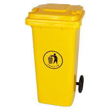
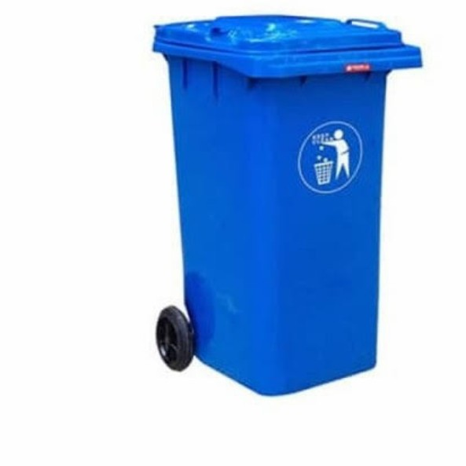
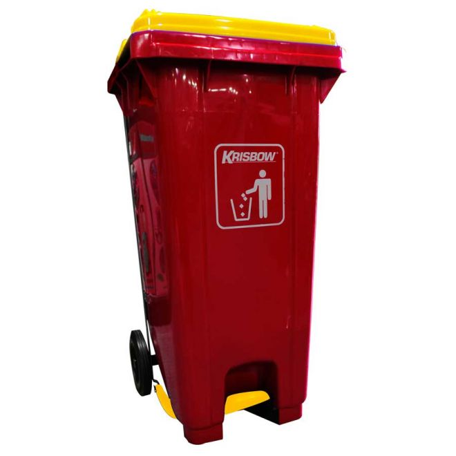

Makna Warna Tempat Sampah dan Fungsinya
Membuang sampah dengan benar sangat penting, karena memilah jenis sampah juga berkontribusi pada pengelolaan limbah yang baik. Inilah penjelasan mengenai warna tempat sampah dan kegunaannya masing-masing.

Hijau
Tempat sampah berwarna hijau digunakan untuk sampah organik, seperti sisa makanan, bahan alami, daun kering, dan kotoran hewan. Jenis sampah ini dapat terurai secara alami, sehingga perlu dibersihkan secara berkala untuk mencegah bau tak sedap dan menarik serangga. Limbah organik umumnya dihasilkan dari rumah tangga, dan jika diolah dengan baik, bisa diubah menjadi kompos atau produk yang bermanfaat lainnya.

Kuning
Warna kuning pada tempat sampah menandakan tempat pembuangan limbah anorganik, seperti plastik, kaleng, dan styrofoam. Meskipun sulit terurai secara alami, bahan-bahan ini dapat didaur ulang menjadi produk baru yang lebih ramah lingkungan. Sayangnya, plastik sering kali menjadi penyebab pencemaran, terutama di lautan, sehingga perlu perhatian khusus dalam pengelolaannya.

Biru
Tempat sampah berwarna biru digunakan untuk sampah kertas. Kertas bekas dapat didaur ulang menjadi produk kertas baru setelah melalui proses pengolahan. Pengelolaan limbah kertas sangat penting untuk mengurangi penggunaan pohon sebagai bahan baku kertas.
Merah
Tempat sampah berwarna merah diperuntukkan untuk limbah berbahaya seperti pecahan kaca, bahan kimia, komponen elektronik, dan zat beracun (B3). Limbah ini memerlukan prosedur penanganan yang hati-hati untuk mencegah bahaya pada manusia dan lingkungan, karena dampaknya bisa sangat berbahaya, baik dalam jangka pendek maupun jangka panjang.